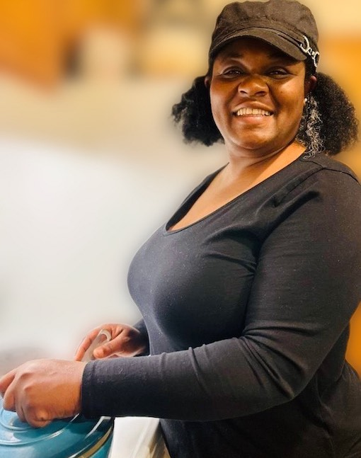

As sisters, we’ve had the honor of being surrounded by amazing home cooks, so great tasting food has always been a staple for us. Food is very often tied to folk’s best memories with family and friends. So we want to share our knowledge of the Jamaican cuisine as a way to preserve our childhood memories, and to create new memories for others.
Paula
Cooking and just living life.

Doris
Well when I’m not doing the above, I’m keeping up with the latest in technology, science and culture, by having thoughtful conversations on how technology is changing every aspect of our lives.